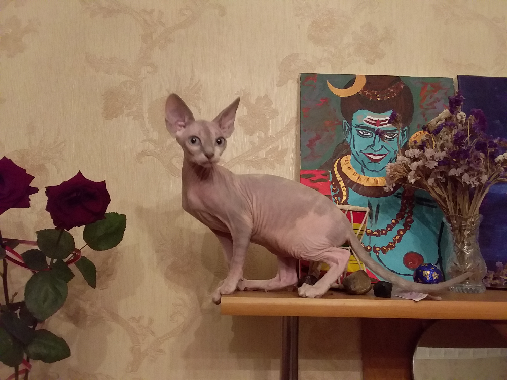
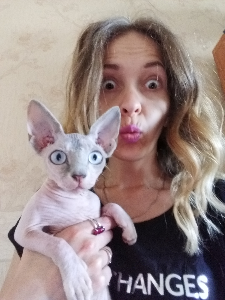
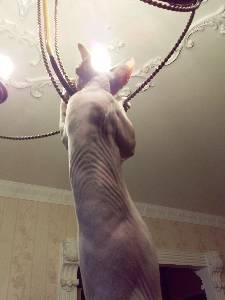
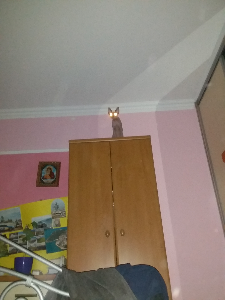
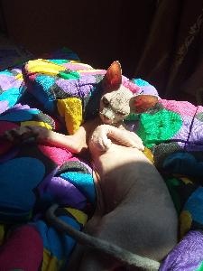
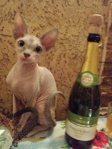
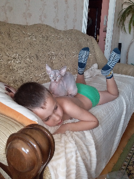

Навіщо вам киця?

Вченими доказано, що спілкування з кішкою підвищує рівень ендорфінів в крові, а отже викликає почуття щастя і продовжує життя
Що треба зробити перед покупкою киці
- Переконайтесь, що заводчик професійний і має всі документи
- Взнайте де поблизу вас є хороший ветеринар та взнайте за прививки
- Підготуйте всі необхідні речі
- Взнайте яким кормом годував їх заводчик
- Просто оберіть кошеня яке вам до вподоби
Список необхідних речей:
- свіжий корм та водичка
- миски для води та їжі
- лежаночка та ковдра
- дряпалка для кігтів
- переноска
- іграшки
- багато любові
10 причин завести вдома кицю
| 1 |
Вона буде схожа на вас у всьому… |
 |
| 2 |
…І навіть любитиме ті самі речі що і ви |
 |
| 3 |
Вона вкрутить лампочку… |
 |
| 4 |
…І послужить ліхтариком якщо у вас немає лампочки |
 |
| 5 |
Вона вкладе спати дитину… |
 |
| 6 |
…І чоловіка теж вкладе спати |
|
| 7 |
Вона пильно стежитиме за порядком |
 |
| 8 |
І застелить за вами ліжко |
 |
| 9 |
Вона вас вислухає в моменти слабкості |
 |
| 10 |
І потримає дитину доки ви сходите в душ |
 |